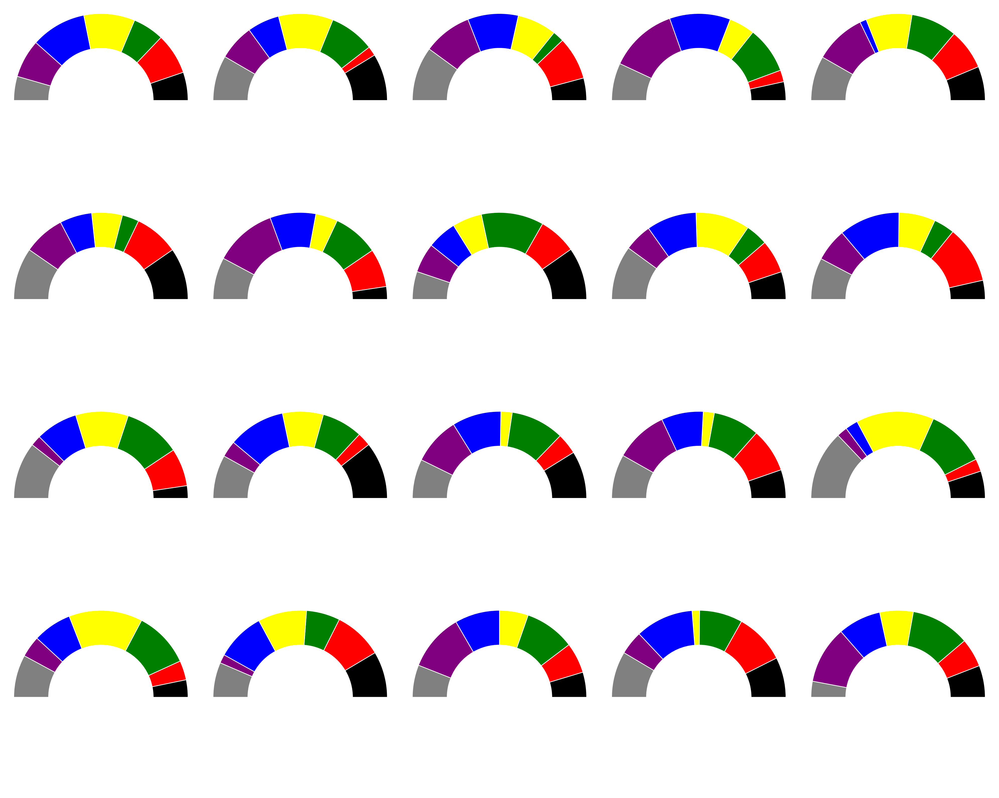
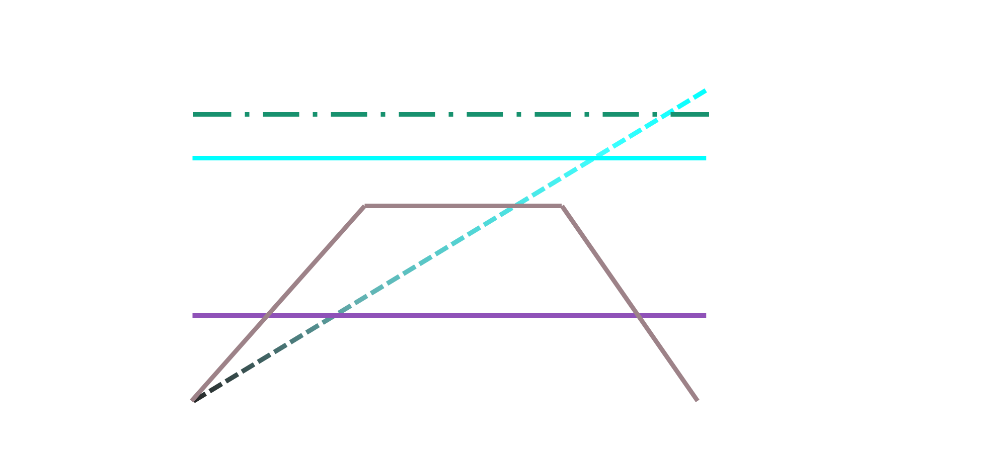
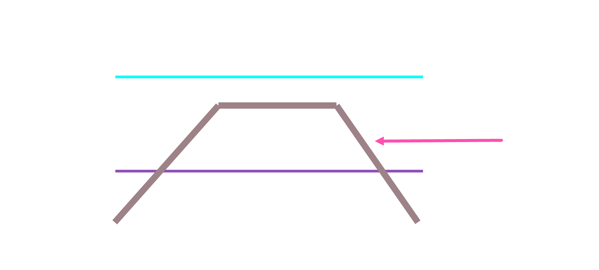
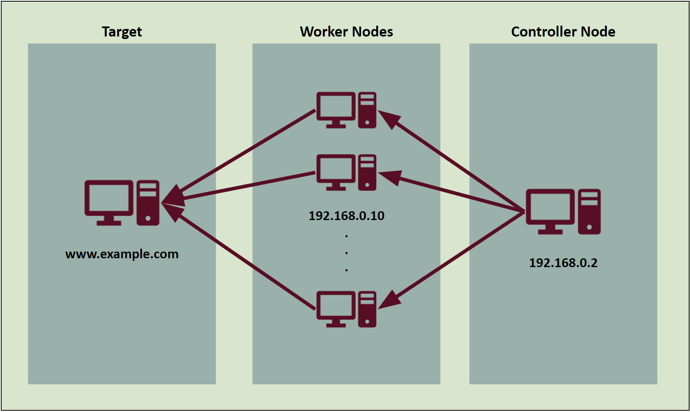
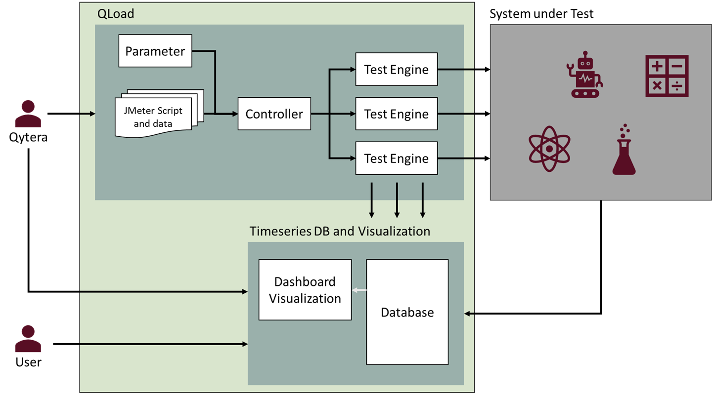
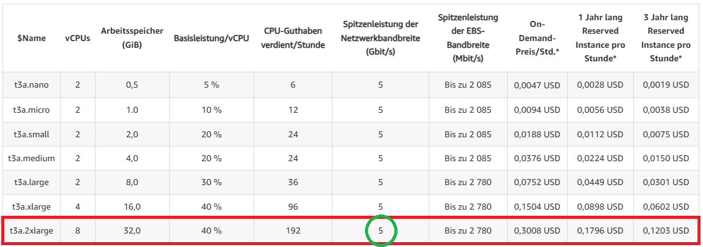
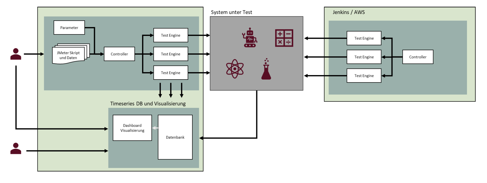
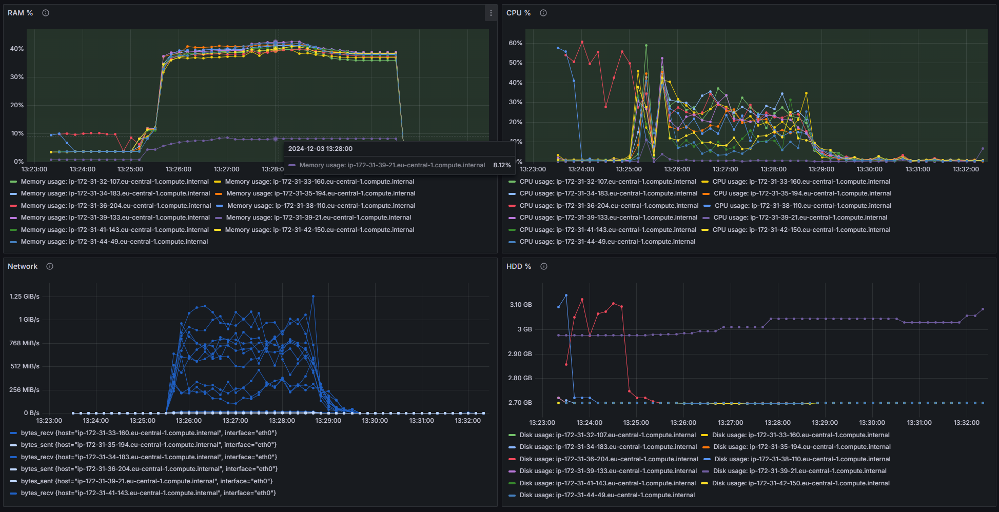
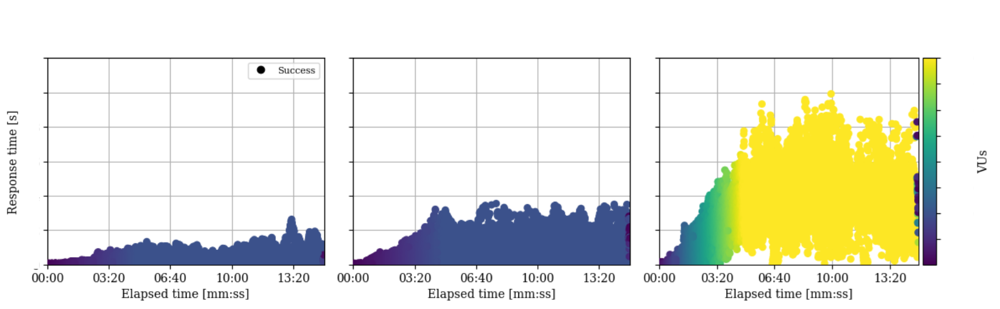
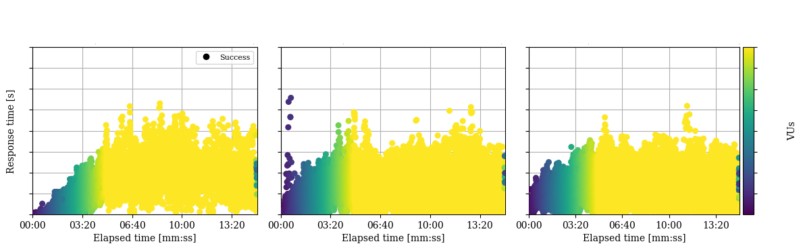

Wenn Performancetest-Tools unter ihrer eigenen Last zusammenbrechen
Vielleicht seid ihr etwas überrascht über den Redner und das Thema. Ich habe gestern Nachmittag erfahren,
dass ich als Ersatz einspringen kann. Und hier bin ich nun und freue mich, dass einige von euch hier sind,
um den Vortrag "Wenn Performancetest-Tools unter ihrer eigenen Last zusammenbrechen" zu hören.
Die Vorbereitungszeit war jetzt nicht all zu lang. Ich versuche deswegen auch mehr auf praktische Erfahrungen einzugehen,
statt es zu theoretisch zu gestalten. Angereichert mit der ein oder anderen Anekdote.
Agenda 📋
kurze Vorstellung
Testobjekt
Performance-Testing
Apache JMeter
Test Setup & Durchführung
Ergebnisse
Fazit
Der Sprecher 🙊 Matthias Eggert
Ich bin Matthias Eggert, 37 Jahre hier aus Frankfurt. Ich bin mittlerweile 12 Jahre professionell in der Softwareentwicklung tätig.
Davon war ich 10 Jahre in der Automobilindustrie, hier bei Conti in Frankfurt Rödelheim und habe mich dort mit
Developer-Plattformen beschäftigt. Das heißt, ich habe Software für Softwareentwickler entwickelt.
Im Laufe der Zeit habe ich mich auf CI/CD und DevOps spezialisiert. Aus meiner DevOps-Rolle heraus bin ich dann bei
Qytera gelandet, wo ich für Testautomatisierung, insbesondere von Performancetests zuständig bin.
Testobjekt 🧫
Lasst uns doch direkt mal anschauen was eigentlich getestet wurde. Denn ohne das Testobjekt ist es
ja auch schwer zu sagen, was wie warum getestet wurde.
Demokratischer Prozess 🗽
Viele Millionen Menschen, Dienste und Crawler
7-stellige Zahl von Requests pro Minute
Und zwar in der Regel genau an einem Tag
Auf unterschiedliche Endpunkte
Große Responses
Es handelt sich um eine Webanwendung mit mehreren REST Schnittstellen, die öffentlich zugänglich ist.
Die Webanwendung selbst ist für einen demokratischen Prozess zuständig, bei dem Millionen von Menschen
und Diensten drauf zugreifen. Dabei reden für von mehreren zehn millionen Zugriffen pro Minute.
Das ganze passiert in der Regel an einem Tag. Nicht davor und nicht dannach. In der Regel ist das bei uns ein Sonntag.
Die Anfragen gehen natürlich auf verschiedene Endpunkte. JSON Antworten und auch Dateiexporte.
Ich denke damit ist der krypische Teil der Erklärungen vorbei. Es geht um die Ergebnissanzeige der
Kommunahl- und Europawahlen 2024. Es handelte sich hierbei um einen behördlichen Auftrag, im Vorfeld
zu den Wahlen die utzerlast entsprechend zu simulieren.
Ich muss mich hier entschudligen. Hier ist ein bischen viel gelb zu sehen.
Die Grafik hab ich Ende November letzten Jahres bereits generieren lassen. Also durch ChatGPT.
Und ChatGPT war in dem Moment noch nicht aktuell genug, und wusste nicht, dass die liberalen sich bereits selbst zerstört hatten.

Aber zurück zu den Wahlen. Wichtig dabei war, dass ein besonders hohes Wahlinteresse prognostiziert wurde. viele politische Turbulenzen, die wir alle kennen.
Dazu natürlich der Umstand, dass mehrere Bundesländer parallel Kommunahlwahlen abhalten während ganz Europa noch wählt.
Zurück zum Testobjekt 🗽
Viele Millionen Menschen, Dienste und Crawler
7-stellige Zahl von Requests pro Minute
Und zwar in der Regel genau an einem Tag
Auf unterschiedliche Endpunkte
Große Responses
DDoS
Angriffe aus dem Ausland
Jetzt muss man also sicherstellen, dass das System einen so großen Nutzerandrang standhalten kann, gleichzeitig aber
gegen DDos-Angriffe und mögliche Angriffe eines potentiellen Schurkenstaatees aus dem Ausland gewappnet ist.
Aber schwenken wir mal rüber zu Performance testing.
💩
Natürlich könnte man jetzt sagen: "ach hat letzte mal geklappt, die paar mehr User die schaffen wir auch dieses mal".
frei nach dem Motto, testing is for wimps, ral men test in production. Kann man so machen, aber ist dann eben kacke.
Aber wir sind ja Tester, wir sind keine "echten kerle". Der gemeine Tester ist ja Grundsätzlich
ängstlich und skeptisch. zu recht.
Man stelle sich nur die Bild Schlagzeile vor: "Demokratie offline – Kein Signal am Wahltag", "Ampel-Koalition steht auf Rot – Wahlergebnisse im Blindflug" oder "Digitalisierung made in Germany".
Nein wir sind wimps, wir wollen testen. was denn genau?
Performance-Testing Arten 🏋️🧘🚣🏃

Performance-Tests umfassen verschiedene Testarten, darunter Lasttests, Stress-Tests und
Ausdauer- oder Dauertests. Jede dieser Testarten zielt darauf ab, unterschiedliche
Leistungsaspekte einer Anwendung zu bewerten. Zum Beispiel:
- Lasttests simulieren eine typische Nutzerbelastung, um zu sehen, wie die Anwendung unter
normalen Bedingungen funktioniert.
- Stress-Tests erhöhen die Belastung schrittweise über das normale Niveau hinaus, um die Grenzen
der Anwendung zu finden.
- Kapazitäts-Tests gehen mit Absicht über die Grenzen der Anwendung hinaus, um zu sehen, wie sie
scheitert.
- Ausdauer-Tests prüfen die Anwendung auf ihre Fähigkeit, über einen langen Zeitraum unter
erwarteter Belastung zuverlässig zu funktionieren.
Durch Performance-Tests können wir Engpässe identifizieren, die Leistung optimieren und
sicherstellen, dass unsere Anwendung auch unter Spitzenlast oder bei steigender Nutzerzahl
zuverlässig funktioniert. Mit diesem grundlegenden Verständnis von Performance-Tests können wir
nun einen spezifischeren Blick auf Apache JMeter werfen und verstehen, wie es uns unterstützt,
unsere Anwendungen zu testen.
Auto-Scaling What 🚗🤔❓
Es gäbe ja noch tests wie Spike-Testing oder deutsch Lastspitzentests. Oder auch Skalierungstests.
Die wären durchaus wichtig wenn wir uns in einem dynamischen Umfeld bewegen würden wo die Nutzerzahlen ständig schwanken.
Aber in unserem Fall ist das nicht so. Wir haben eine große Last an einem Tag, und dann ist es wieder ruhig.
Entsprechend ist unser Testobjekt auch konstant groß dimensioniert. Es gibt kein Auto Scaling. Das ist ganz einfach überflüssig.
Konstante Hochlast ↗️

Und weil das eben so ist, brauchen wir auch nur eine extrem hohe aber konstante Last zu erzeugen. Und das haben wior gemacht.
und zwar mit apache jmeter. in unserer eigenen kleinen Umgebung Namens Qload. Das hilft und Lastagenten in der Cloud zu erzeugen.
Ich werde im folgenden allerdings eher auf die technischen details eingehen, wie man sowas umsetzen kann, als hieraus eine Werbeveranstaltung werden zu lassen.
Apache JMeter 🪶
Open Source Java basiert
GUI und CLI
Skalierbar
Plugins
Apache JMeter ist ein mächtiges Open-Source-Tool, das vorwiegend für Performance-Tests und
Lasttests von Anwendungen eingesetzt wird. Entwickelt in Java, bietet JMeter eine flexible
Plattform für die Bewertung der Leistung von Webanwendungen.
JMeter kann sowohl über eine grafische Benutzeroberfläche (GUI) als auch über die
Kommandozeilenschnittstelle (CLI) bedient zu werden. Während die GUI insbesondere während
der
Testentwicklungsphase für ihre Benutzerfreundlichkeit und visuelle Rückmeldung geschätzt
wird,
ermöglicht die CLI einen effizienteren Betrieb in Testumgebungen, was besonders bei der
Integration in CI/CD-Pipelines nützlich ist. Oder eben auch für eine Integration in
Cloud-Lösungen wie Azure Load Testing. Wir haben es auch in einer eigenen cloud-basierten
Lasttestlösung im Einsatz, QLoad.
JMeter zeichnet sich durch seine Skalierbarkeit aus. Es kann auf einzelnen Workstations für
einfache Testaufgaben eingesetzt werden, lässt sich aber auch in großem Umfang für komplexe
Lasttests verwenden, die mehrere Server umfassen können. Diese Skalierbarkeit macht es zu
einem
idealen Werkzeug für Unternehmen jeder Größe, um die Leistung ihrer Anwendungen unter
verschiedenen Lastbedingungen zu bewerten.
Ein weiteres wichtiges Merkmal von JMeter sind die zahlreichen verfügbaren Plugins, die
seine
Funktionalität erweitern. Diese Plugins ermöglichen es den Benutzern, neue Testfähigkeiten
hinzuzufügen, die Anpassung von Berichten zu verbessern und die Integration mit anderen
Tools
und Plattformen zu vereinfachen. Obwohl JMeter bereits eine umfassende Palette an
Testmöglichkeiten bietet, erlauben es diese Plugins, das Tool noch weiter an spezifische
Bedürfnisse anzupassen. Die Entwicklung eigener Plugins ist ebenfalls möglich, was die
Flexibilität von JMeter zusätzlich erhöht.
Insgesamt bietet Apache JMeter als ein vielseitiges, leistungsstarkes Tool für
Performance-Testing und Lasttest eine robuste Lösung für Entwickler und
Qualitätssicherungs-Teams. Seine Open-Source-Natur, gepaart mit umfangreicher Dokumentation
und
einer aktiven Community, macht es zu einer zugänglichen und wertvollen Ressource für die
Optimierung der Leistung von Webanwendungen und anderen Diensten.
JMeter Skalieren ⚖️

(K6 angeblich 5 mio pro Minute von einer Maschine)
⛅ = 😇
JMeter kann also genauso krass skalieren wie mein Testobjekt. super krass.
Ich fahre einen Tag für ein paar Stunden hunder Lastagenten hoch, führe JMeter darauf aus. Schicke mir dann am
besten noch Ergebnisse in meine Zeitseriendatenbank wie prometheus oder influxdb. geil. Kosten überschaubar.
Das perfekte Cloud Projekt.
⛈️ = 😈
Wäre der Teufel nicht ein fieses gemeines Eichhörnchen.
Denn so einfach wie es theoretisch ist war es dann doch nicht.
Oder wie ein Professor mal zu mir meinte: "in der Theorie sind Theorie und Praxis dichter beieinander als in der Praxis".

Also was haben wir hier gemacht? Wir haben einfach ein System, was uns EC2 Instanzen in der AWS-Cloud zur verfügung stellt.
Oder eben vergleichbare bei anderen Cloud-Anbietern. Explizit aber keine Fargate Instantzen, denn die haben keine garantierten Netzwerkbandbreiten und sind
bei solchen Dimensionen an Tests unter Umständen nicht ausreichend schnell.
Wir haben also eine Instanz, die uns die Lastagenten zur Verfügung stellt. Und dann haben wir noch eine Instanz, die uns die Visualisierung zur Verfügung stellt, alo Influx und Grafana.
Dann brauch man noch ein Möglichkeit die JMeter Dateien auf alle Agents zu verteilen und startet JMeter einfach im Controller-worker-mode.
Viel mehr ist es nicht. Das ist die Grundidee. Wie die Instanzen jetzt verknüpft sind, also in einem Kubernetes Cluter oder ob man das selbst managed, ist völlig egal.
Fehlschlag 🪠
RAM, CPU, Netzwerk
RAM stieg noch weiter an, wenn man zu wenig Netzwerk hatte
Reporterstellung (mindestens x5)
Nicht denken, dass es kaputt ist, es dauert nur ewig
Grafana konnte nur noch 30 Sekunden Fenster laden
Aber Zeitdruck
http://localhost:3000/d/PyR6xlG7z/system-monitoring-with-influxdb-cloud-and-telegraf?orgId=1&from=2024-04-16T14:27:42.853Z&to=2024-04-16T18:25:47.945Z&var-bucket=3-2-KommONE&var-hosts=$__all
http://localhost:3000/d/PyR6xlG7z/system-monitoring-with-influxdb-cloud-and-telegraf?orgId=1&from=2024-04-21T22:00:00.000Z&to=2024-04-24T21:59:59.000Z&var-bucket=3-2-xl&var-hosts=$__all
http://localhost:3000/d/PyR6xlG7z/system-monitoring-with-influxdb-cloud-and-telegraf?orgId=1&from=2024-04-23T07:25:44.162Z&to=2024-04-23T13:19:07.926Z&var-bucket=3-2-xxl&var-hosts=$__all
http://localhost:3000/d/PyR6xlG7z/system-monitoring-with-influxdb-cloud-and-telegraf?orgId=1&from=2024-04-22T13:29:18.374Z&to=2024-04-22T14:16:11.560Z&var-bucket=3-2-xl&var-hosts=$__all
------
http://localhost:3000/d/PyR6xlG7z/system-monitoring-with-influxdb-cloud-and-telegraf?orgId=1&from=2024-12-02T15:33:17.987Z&to=2024-12-02T15:38:43.410Z&var-bucket=3-2-l&var-hosts=$__all&refresh=5s
http://localhost:3000/d/PyR6xlG7z/system-monitoring-with-influxdb-cloud-and-telegraf?orgId=1&from=2024-12-02T15:48:08.702Z&to=2024-12-02T15:51:02.601Z&var-bucket=3-2-l&var-hosts=$__all&refresh=5s
http://localhost:3000/d/PyR6xlG7z/system-monitoring-with-influxdb-cloud-and-telegraf?orgId=1&from=2024-12-02T16:25:22.202Z&to=2024-12-02T16:29:01.066Z&var-bucket=3-2-l&var-hosts=$__all&refresh=5s
-----
http://localhost:3000/d/PyR6xlG7z/system-monitoring-with-influxdb-cloud-and-telegraf?orgId=1&from=2024-12-03T12:22:50.417Z&to=2024-12-03T12:32:27.058Z&var-bucket=3-2-l&var-hosts=$__all&refresh=auto
http://localhost:3000/d/PyR6xlG7z/system-monitoring-with-influxdb-cloud-and-telegraf?orgId=1&from=2024-12-03T12:34:19.307Z&to=2024-12-03T13:08:56.282Z&var-bucket=3-2-l&var-hosts=$__all&refresh=auto
🪲🐞
Note that while you can execute the JMeterEngine on your application server, you need to be
mindful of the fact that this will be adding processing overhead on the application server and
thus your testing results will be somewhat tainted. The recommended approach is to have one or
more machines on the same Ethernet segment as your application server that you configure to run
the JMeter Engine. This will minimize the impact of the network on the test results without
impacting the performance of the application server itself.
However, remote mode does use more resources than running the same
number of CLI mode tests independently. If many server instances are used, the client JMeter can
become overloaded, as can the client network connection. [...] always check that your client is not overloaded.
JMeter Master Config ⚙️ 
First things first
mehr RAM, mehr Netzwerkbandbreite
Was ist aufgefallen. Tatsächlich ist der RAM Verbrauch immer weiter angestiegen. Aber er ist unproportional angestiegen. Nämlich ab dem Zeitpunkt, an dem
die Netzwerkbandbreite nicht mehr ausreichte. Scheinbar wird alles, was nicht verschickt werden kann, im RAM vorgehalten und führt zu einer Explosion.
Ich hatte zunächst nur versucht RAM zu erhöhen und bin gescheitert an massiven Problemen. Der verbrauch ging mit der Länge des Tests immer weiter hoch.
Erst als ich dann auch die Netzwerkbandbreite erhöht habe, ging der RAM Verbrauch wieder runter.
Deswegen hier erstmal die Empfehlung: mehr RAM und mehr Netzwerkbandbreite für den Controller. Und dann erst alles andere.
Hier habe ich es jetzt massiv übertrieben. Aber better safe than sorry.
Ob man am Ende für eine Instanz 1$ pro Stunde oder 5$ pro Stunde ausgibt, ist dann auch egal bei 3h Testlaufzeit.
🆕🆕🆕

Ich stand ja noch vor meinem Grafana Problem. Ich konnte nicht mehr anständig in die Daten schauen, weil es einfach zu viele waren. Das fetchen
aus Influx war schon problematisch, die Aggregation dann zusätzlich. Da kann man sicher noch was machen.
Aber ich stand eben auch unter Zeitdruck und habeeine andere einfache pragmatische lösung gesucht und gefunden.
QLoad + Jenkins
Kann jeder, auch ohne cloud Kenntnisse
Einfach agents starten und tests unabhängig laufen lassen
Am ende reports einsammeln und gesamtreport erstellen.
StrippedBatch O.M.G. 😱
mode=StrippedBatch
Tja und dann kam ein Zufallsfund. Nachdem ich einiges recherchiert hatte.
Wir hatten in unserem Setup eine alte JMeter Konfiguration. Mit dieser Konfiguration
sammelte der JMeter Controller nicht nur Werte wie Status Code, Antwortzit usw., sondern auch
den eigentlichen Inhalt der Antworten. Deswegen war der Controller so überlastet.
Er war die ganze Zeit damit beschäftigt, die Antworten von den Workern zu sammeln und zu speichern.
Fühlte sich im Nachgang etwas dämlich an, dass ein einfaches boolean Flag in der konfig genau so EinProblem verursachen kann.
Aber meistens sind die Antworten schon interessant. Gerade bei Fehlern würde man dann schon im Nachgangden eigentlichen Grund noch wissen wollen.
Deswegen hatten wir diese option mit gutem Grund auch aktiviert. Aber in diesem Fall führte es eben zum Overkill.
Ohne den Modus, sah das ganze dann so aus.
mode=StrippedBatch

Plötzlich ist es nicht mehr der Controller der Netzwerklast erzeugt, sondern nur noch die Worker.
Und zwar in einem erträglichen Verhältnis.
Grafana 📈
Python 🐍

Nicht vorenthalten
Ein Traum für jeden Performancetester…zumindest fast:

am Ende hat mit Skalierung geklappt, und wir waren froh es ausprobiert zu haben. Aber es lief
von Anfang an stabil, es gab nie Fehler.
Lösungsansätze (mittel-/langfristig) ⭐
mehrere Systeme für Lastagenten
Responses nicht im report speichern (StrippedBatch)
Report asynchron laufen lassen
Custom Listener der Responses nur im Fehlerfall speichert
K6 statt JMeter (Kein Reporting, Kein Master-Slave; Aber ...)
Fazit 🩻
Performance-Tests sind essenziell für die Zuverlässigkeit von Anwendungen.
Apache JMeter ist ein mächtiges Tool, aber nicht ohne Herausforderungen.
Skalierung und Ressourcenmanagement sind kritische Faktoren.
Cloud-basierte Lösungen bieten Potenzial, aber auch neue Probleme.
Kontinuierliche Optimierung und Anpassung sind notwendig.